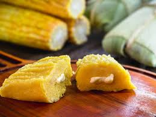

Quando o frio chega, a cozinha se transforma no coração da casa. No inverno, a comida ganha outro ritmo — é
mais lenta, mais cheirosa, mais acolhedora. No Sul, é tempo de resgatar receitas que aquecem de verdade:
caldos fumegantes, massas artesanais, polenta cremosa, pinhão cozido e aquele entrevero que perfuma a casa
inteira.
Tem gosto de lembrança, cheiro de lenha, panela no fogo e coberta no colo. Cada prato carrega um pedacinho
da cultura, do campo, da serra, da tradição que passa de geração em geração. Não é só pra matar a fome — é
pra aquecer a alma.
Pamonha doce com queijo

Ingredientes
6 espigas de milho verde
1 xícara de açúcar
1 pitada de sal
Queijo minas (meia cura ou fresco)
Palhas do milho para enrolar
Modo de preparo
Rale ou bata os grãos de milho no liquidificador.
Misture o açúcar e o sal.
Coloque um pouco da massa nas palhas e adicione o queijo.
Feche e cozinhe por cerca de 40 minutos.
Pierogi
Ingredientes
2 xícaras de farinha de trigo
1 ovo
1/2 xícara de água
Recheio: batata, requeijão, cebola
Modo de preparo
Faça a massa com farinha, ovo e água.
Abra, corte círculos, recheie e feche em meia-lua.